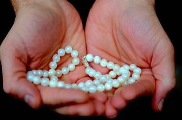
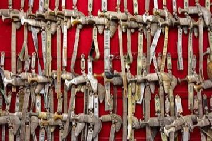

Odede
Uganda · Board and table games
Ogooué river pirogue journey
Gabon · Racing
Ohrid Pearl Maker
North Macedonia · Crafts and makingOhvalhu
Maldives · Board and table games
Oil wrestling
Turkey · Wrestling and martial sports
Oil-paper umbrella making
China · Crafts and making
Oina
Romania · Bat-and-ball games
Olinda Keliya
Sri Lanka · Board and table games
Omani Khanjar Silver Filigree
Oman · Crafts and makingOmweso
Uganda · Board and table gamesOrdo
Kyrgyzstan · Dexterity and skill games
Otedama
Japan · Dexterity and skill games
Oualata Wall Painting
Mauritania · Crafts and making

Owela
Namibia · Board and table games